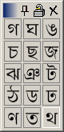

Quick Key extends your keyboard, letting you type all 65,000 characters that there are today. It does so without cluttering your screen or interfering with your work. To type a character, click it. Quick Key is completely free of charge, and is licensed under the Open Source GPL license.
Introduction
Quick Key is primarily a flexible keyboard extension, although it has dozens of unique features that make it indispensible for developers as well as regular users. Quick Key is an alternative to using Microsoft Character Map or Alt Codes, both of which are difficult to use. Quick Key is the ideal solution for people who need to input foreign characters or mathematical symbols quickly, but do not want to spend time learning a new keyboard layout.
Installation
After you have downloaded the Quick Key zip file , you will need to unzip it using a decompression utility. For users of Windows XP, right click on the file and choose Extract All. Now double-click on setup.exe and follow the provided instructions. Once the installation is finished, click the Start Menu>Programs>Quick Key>Quick Key. A red and black icon should appear in the bottom-right corner of your screen. Click this icon to display the Character Grid.
Using Quick Key
- Quick Key supports drag-and-drop for almost everything. You can move characters around inside Quick Key, out of Quick Key, and into Quick Key using drag-and-drop.
- Quick Key also allows you to copy and paste characters, as well as their HTML code.
- Quick Key allows you to send characters to a specific application using a program code. For example, MSN Messenger is MSBLClass.
- Quick Key can function as a reference for Alt codes. To see information about a symbol or letter, move your mouse over it.
- Quick Key allows you to save customized groups of characters to disk.
- Quick Key filters your character sets, displaying only a certain category of characters. For example, by default, Control and Format characters are hidden.
Bugs?
Please help me make Quick Key better by reporting bugs when you find them. All I need is a sentence describing what was clicked when Quick Key crashed, and the contents of the Error Log. After you have restarted Quick Key, right click the icon in the system tray and choose Error Log. Make sure you select Last Five Instances before you copy and paste into the email. My email address is nathanaeljones@users.sourceforge.net
Please don't limit your feedback to bugs - I'd love to hear your comments, suggestions, and criticisms. If you have any ideas for this website, or know of something that should be included in the documentation, please let me know.
Licensing
Quick Key is an Open Source project. That means you can send it to your friends, modify the source code, and put it on every computer you own. Just make sure you don't restrict these rights to anybody else, and you keep the notices attached. Any modifications you make are under the same rules. Please read the GNU General Public License. Quite a bit of Quick Key is located in a separate package called the JCL (Jones Control Library). This part is licensed under the GNU Lesser Public License, which is the same as above, except it can be used in proprietary programs.